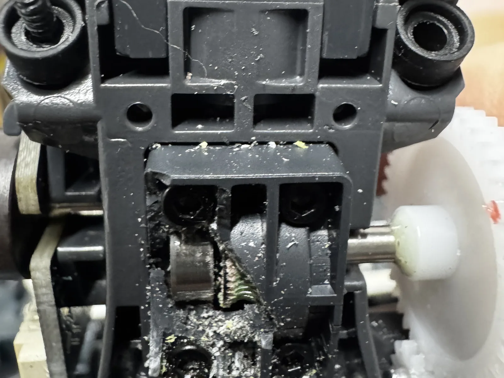

¿Tu Bambu Lab P1S no extruye?
El extrusor hace clic, el filamento no baja o la impresión sale delgada y con huecos. En la P1S casi siempre es un tapón en la boquilla o arriba de ella, los engranes del extrusor o el cortador del cabezal.
Lo que casi siempre hay detrás

Tapón en la boquilla o en la garganta
Con PLA y la puerta cerrada, el calor del gabinete sube por la garganta y el filamento se ablanda antes de tiempo (heat creep). También pasa con filamento húmedo o restos de otro material.
Engranes del extrusor
Con el uso se llenan de polvo de filamento o se gastan, y dejan de agarrar. Con filamentos con fibra de carbono se gastan mucho más rápido.
El cortador del cabezal
Si el cortador no regresa bien a su lugar, el filamento no pasa. Es una pieza chica que se atora más seguido de lo que parece.
Tubo PTFE y camino del AMS
Un tubo desconectado o gastado frena el filamento antes de llegar al cabezal y el extrusor no da abasto.
Lo que puedes revisar tú
Muchas veces se resuelve aquí. Si no, ya tienes la mitad del diagnóstico hecho.
- Abre la puerta o la tapa para PLA
Bambu Lab recomienda imprimir PLA con la tapa abierta. Si el tapón salió con la puerta cerrada, es la causa más probable.
- Descarga y vuelve a cargar
Desde la pantalla, descarga el filamento con la boquilla caliente, corta la punta en diagonal y vuelve a cargar. Mira si sale material por la boquilla.
- Seca el filamento
Si truena o hace burbujas al salir, está húmedo. Pasa el carrete por el secador antes de culpar a la máquina.
- Sigue la guía paso a paso
En el blog tenemos la guía completa: extrusor atascado en Bambu Lab, con cada síntoma y su arreglo.
Lo que hacemos en el taller
Desarmamos el cabezal, limpiamos o cambiamos boquilla y garganta, revisamos engranes, cortador y el camino del filamento desde el AMS. Te mandamos fotos de lo que encontramos y la cotización antes de cambiar piezas. La reparación tiene garantía de 90 días.
Diagnóstico — $300 MXN
Te decimos qué tiene, qué hay que cambiar y cuánto sale. Se cobra siempre, salga la reparación o no.
Mano de obra — $700 MXN
La reparación completa; $400 MXN si el diagnóstico ya se hizo aquí. Refacciones aparte, siempre con tu autorización.
Desde otro estado
Mándala por paquetería: en envío al taller cotizas la guía y te decimos cómo empacarla.
Lo que nos preguntan
¿Aplica igual para la P1P, la X1C y la P2S?
Sí. Las causas son las mismas en toda la serie P y X; lo que cambia es cómo se desarma cada cabezal. Las recibimos todas.
¿Cuánto tarda?
El diagnóstico es de 12 a 36 horas hábiles desde que la recibimos. Un tapón se resuelve casi siempre ese mismo día después de que autorizas.
¿Cuánto cuesta la reparación?
El diagnóstico cuesta $300 MXN. La mano de obra de la reparación es $700 MXN, o $400 MXN si el diagnóstico ya se hizo aquí. Las refacciones van aparte y nunca se cambian sin que tú lo autorices.
No estoy en la Ciudad de México, ¿me la pueden reparar?
Sí. Recibimos impresoras de todo México por paquetería: en envío al taller cotizas la guía y te decimos cómo empacarla.
¿No se arregló? Tráela al taller
Elige el día y la hora para dejarla. Recepción de lunes a viernes de 12:00 a 18:00, en Av. División del Norte 1354, Piso 1, Letrán del Valle, Benito Juárez, CP 03650.